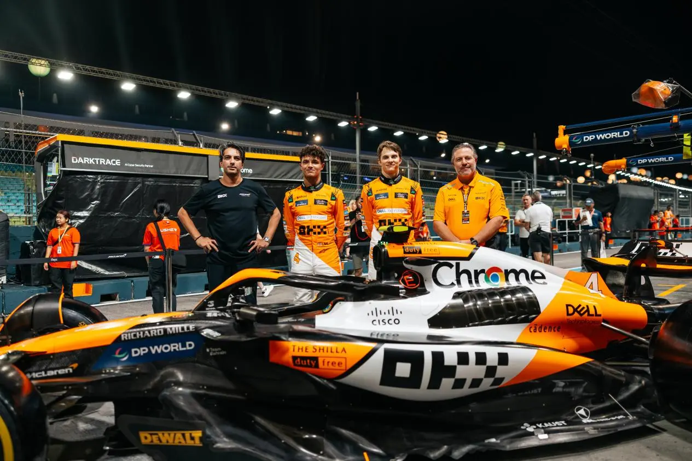

幣圈為什麼不贊助 2026 世界盃了？答案可能不只是熊市：錢還在，只是換了一個位置
全世界最大的舞台上，幣圈缺席了。但同一年，幣圈體育贊助的總額創了新高。錢沒有變少，是被搬去了別的地方——而那個地方，透露了他們現在到底想買什麼。
2026 世界盃打完，場邊廣告牌翻一輪，你是否有發現：一個交易所 logo 都沒有。四年前卡達那屆完全不是這樣。第一反應當然是「熊市，沒錢了」——但當我們把數字拉出來看，卻發現了事情並不是這樣。
幣圈為什麼不贊助 2026 世界盃了？
不是沒錢。幣圈體育贊助的總額在 2024/25 一路衝到 5.65 億美元，年增兩成；當年 34 筆新簽的加密贊助案裡，有 20 筆押在足球上。光 Crypto.com 一家的累計支出就達到 2.13 億美元。被放掉的是世界盃這個位置，不是體育，更不是足球。
FIFA 這邊也不是賣不掉。2026 年的官方贊助名單三層都塞滿了：頂層是 Adidas、可口可樂、現代起亞、Visa、Aramco、Lenovo、卡達航空；第二層是百威、麥當勞、美國銀行、樂事、蒙牛、聯合利華、Verizon、海信；再往下還有 Home Depot、美國航空、Airbnb、DoorDash。FIFA 今年 3 月宣布 16 個全球贊助包全數售罄。
名單裡沒有一個幣圈品牌。位置有人買，只是不是他們買。
四年前完全相反。Crypto.com 是卡達世界盃的官方贊助商，拿下「加密交易平台」這個獨家類別；Algorand 同年 5 月跟 FIFA 簽約，當北美與歐洲的區域支持者，順便做官方的區塊鏈錢包；Binance 則在開賽前兩個月上線了足球粉絲代幣指數的永續合約。三家，三種玩法，全部押在同一顆球上。
到了 2026，據 Crypto Briefing 7 月中的盤點，整屆賽事最主要的加密相關整合只剩下 Panini 的 NFT 球員卡，市場反應平淡。
| 項目 | 2022 卡達 | 2026 北美 |
|---|---|---|
| 官方贊助商（幣圈） | Crypto.com——拿下「加密交易平台」獨家類別 | 無 |
| 其他 FIFA 層級合作 | Algorand——北美與歐洲區域支持者，兼官方區塊鏈錢包夥伴 | 無 |
| 交易所的周邊操作 | Binance 開賽前兩個月上線足球粉絲代幣指數永續合約 | 無 |
| 整屆最主要的加密整合 | 三家、三種玩法並行 | Panini 的 NFT 球員卡，市場反應平淡 |
| 贊助包銷售狀況 | — | 16 個全球贊助包於 2026 年 3 月全數售罄，買家中無任何幣圈品牌 |
那錢跑去哪了？幣圈的體育贊助其實還在漲
跑去 F1。2026 賽季的維修道上，交易所的 logo 幾乎貼滿一整排：Coinbase 在 Aston Martin、Kraken 在 Williams、OKX 在 McLaren、BingX 在 Ferrari、Gate.io 在 Red Bull、Nexo 在 Audi。賽事層級的冠名由 Crypto.com 把合約一路續到 2030 年，邁阿密站的冠名從 2022 年就沒斷過。
但這裡有個問題值得思考：貼在車身上的 logo，跟貼在場邊廣告牌上的 logo，到底差在哪？兩個都是曝光。Nexo 貼在 Audi 上，跟可口可樂貼在球場邊，本質上沒有任何不同。
去翻翻兩邊的贊助合約實際在賣什麼，我認為差別不在那塊版面上。
世界盃跟 F1 賣的，不是同一種東西
一個賣「關聯」，一個賣「素材加檔期」。
FIFA 那一包給你的是商標授權、款待席次、賽場活化空間、轉播與數位整合，外加類別獨家。但整套制度的重心是保護這個關聯不被別人偷走：賽場周邊劃出 Clean Zone，非贊助商不得促銷、不得發放廣告物，FIFA 的法務執法力度在全球體育界排得上前段。你買到的核心價值，是「只有你能講」。
然後它一個月就打完，下一次是四年後。
F1 車隊那一包是完全不同的形狀。車手出席權、每個比賽週末的 paddock 與 B2B 款待、內容授權、共同品牌數位內容——每一項在談判桌上都是分開計價的項目。你買的不是一塊版面，是一整年可以反覆拿去組裝的原料。
一年 24 個比賽週末，你才有得測、有得比、有得砍掉重練。四年一次的東西，你連 A/B 的機會都沒有，只能事後估算它值多少。
所以差別不在誰的聲量大。差別在一個給你舞台，一個給你材料。
OKX 花四年，把一支 F1 車隊用成了什麼
用成了一條通路。這件事最好的例子是 OKX 跟 McLaren，因為他們自己把話講得很白。
OKX 的行銷長 Haider Rafique 在 2025 年 1 月受訪時講的一句話，把這件事說得比任何分析都清楚：
「加密產業的通路非常困難……你只有兩個通路：Apple App Store 跟 X。」
這句話一出來，整件事就通了。交易所的廣告帳號在 Meta、Google 上動不動被砍，常規買量通路等於半封鎖。在這個前提下，體育贊助根本不是「品牌預算」那個科目——它是通路預算。你不是在買知名度，你是在買一個沒人能把你踢掉的發佈管道。
買到通路之後，OKX 這四年做的事，剛好把「素材包」三個字用到底。
第一，把塗裝當成內容檔期。2023 年新加坡站，McLaren 的 MCL60 換上 OKX 的「Stealth Mode」隱形塗裝；2024 年摩納哥站是 Senna 致敬塗裝，那一檔拿到超過 4.7 億次曝光、3,600 萬次互動、1.8 億次影片觀看；同年新加坡站又來一次，MCL38 披上致敬 MP4 世代（1981–1996）的「Legend Reborn」，座艙印上 Senna、Prost、Lauda 等 13 位那個年代車手的名字。

一台車一年可以換好幾次衣服，每換一次，就是一次新的發佈——而且每一次都自帶一個可以講的故事。這是廣告牌買不到的東西：廣告牌只能重複播放同一則訊息，賽車可以每一站都換一個說法。
第二，把車手當成內容產線。「My Fabric」系列讓 Lando Norris、Oscar Piastri 跟執行長 Zak Brown 講自己的人生故事。這是合約裡「車手出席權」那一行換來的東西，版面買不到。
第三，把賽道旁邊變成開戶櫃檯。2023 年新加坡站，OKX 在 CHIJMES 辦了 McLaren 主題的「OKX Race Club」——四台賽車模擬器、展示車、Norris 跟 Zak Brown 都到場。而迎賓櫃檯的規則寫得很直接：建立一個 OKX 錢包、在 OKX NFT 市場鑄造一個 NFT，就送你周邊。據 Digiday 報導，那場活動有 12,000 人到場，其中超過四分之一當場開了 OKX 帳戶。
三千多個帳戶。這已經不是贊助活化了，是把獲客漏斗整組搬到賽道旁邊。這套把注意力導回帳戶的手法，跟交易所行銷手法全拆解裡那幾台機器是同一個東西，只是這次裝在賽車場。
McLaren 這筆合約外界報導的年費大約在 800 萬到 1,200 萬美元之間（雙方沒有公開證實），第一年換到約 10 億次曝光。而 OKX 另一筆曼城的球衣袖標贊助，據報導年費約 7,000 萬美元，第一年帶來約 60 億次曝光。
拿計算機按一下會發現，兩邊每千次曝光的價格落在同一個量級。
所以選 F1 不是因為曝光比較便宜。便宜的從來不是曝光，是曝光以外的那些東西。袖標買不到一年 24 次自己搭台子的權利，也買不到把車換一次衣服就能發一次新聞的檔期。Rafique 另外還講過一件事佐證了這個判斷：他們不另外購買 F1 轉播的媒體廣告版位——要的不是媒體版位，是那個能自己改裝的東西。
順帶一提，這筆合約簽到 2026 年底，也就是今年就到期。Rafique 公開說想再續五年。McLaren 的行銷長則說，OKX 的投入「讓我們的大逆轉成為可能」——2024 年，McLaren 拿下睽違 26 年的車隊冠軍。
| 年份 | 動作 | 公開成效 |
|---|---|---|
| 2022 | 自邁阿密站起成為 McLaren F1 與 Shadow 電競隊 Primary Partner，品牌上車、上頭盔、上隊服 | 第一年約 10 億次曝光 |
| 2023 | 新加坡站，MCL60 換上「Stealth Mode」隱形塗裝 | — |
| 2023 | 新加坡 CHIJMES 辦 OKX Race Club 粉絲區：4 台賽車模擬器、展示車、Norris 與 Zak Brown 出席；迎賓櫃檯以「建立 OKX 錢包＋鑄造 NFT」換周邊 | 12,000 人到場，逾四分之一當場開戶（3,000+ 個帳戶） |
| 2024 | 摩納哥站 Senna 致敬塗裝（與 Senna Brand 合作） | 4.7 億+ 曝光、3,600 萬+ 互動、1.8 億次影片觀看 |
| 2024 | 新加坡站「Legend Reborn」塗裝：MCL38 致敬 MP4 世代（1981–1996），座艙印上 13 位該世代車手姓名 | — |
| 2024 | 「My Fabric」內容系列：Norris、Piastri 與執行長 Zak Brown 講自己的故事 | — |
| 2026 | 合約於年底到期；OKX 行銷長公開表示想再續五年 | — |
| 對照 | 同期 OKX 的曼城球衣袖標贊助，年費據報約 7,000 萬美元 | 第一年約 60 億次曝光 |
而且不是只有 OKX 這樣用。Kraken 在 2025 年 7 月 8 日到 8 月 8 日辦過一場尾翼爭奪戰：六顆迷因幣比誰在 Kraken App 裡的美元交易量最高，贏家的圖案就印上 Williams 賽車在新加坡站的尾翼，規則還特別寫明不准機器人、不准刷量，最後 PENGU 拿下正尾翼。Coinbase 那邊則是 2025 年 2 月宣布贊助 Aston Martin 時，讓車隊公開說明整筆費用全額以 USDC 支付，把付款這個動作本身做成產品示範。同一個車隊版位，三家用出三種完全不同的東西——這正是「素材」跟「舞台」的差別。
那為什麼是賽車，不是足球？
嚴格講，退場的不是足球，是「四年一次」。
這裡有個容易被自己說服過頭的地方：同一家 OKX，一邊贊助 McLaren，也簽過曼城的球衣袖標，年費據報約 7,000 萬美元。如果足球真的不適合幣圈，那筆錢怎麼解釋？
解釋是曼城一個球季踢三十幾場，加上整年不斷的俱樂部內容，那本身就是一條可以反覆使用的檔期。世界盃是一個月打完，下次四年後。同樣是足球，這兩個在行銷排程上根本是不同的商品——一個能養，一個只能押。
至於世界盃還有第二層難處：它賣的是「所有人」，而幣圈要的是會在半夜開槓桿的那一小撮人。
觸及最大的媒體，通常也是輪廓最模糊的媒體。全家一起看球的客廳裡，會去開合約帳戶的人比例低到嚇人。CPM 便宜不代表 CPA 便宜——中間隔著一個叫轉換率的地雷，而世界盃這種等級的版位，你買的時候沒辦法知道它踩不踩得過去。
這個坑不是幣圈獨有的。把一整季預算押在大型活動主視覺上的案子每年都有，結案報告的聲量圖漂亮得不得了，但整條路徑從頭到尾沒有一個能接單的口子——沒有專屬連結、沒有代碼、沒有落地頁，最後只能拿「品牌知名度」四個字交差。錢花完了，沒人說得出它換回什麼。
而高刺激、受監管、靠轉換吃飯的品類，向來不做這種事。這類生意的行銷部門有個近乎本能的習慣：買任何東西之前先問一句「這裡面能不能塞進一個推薦碼」。塞不進去的，再便宜也不碰。
至於賽車的觀眾輪廓為什麼跟幣圈用戶重疊得那麼準，我在拆解加密貨幣為什麼狂贊助賽車那篇講過，這裡就不重複了。
不過這套「檔期決定一切」的說法，應該要經得起一個反例的考驗：如果有一種體育贊助，本身就自帶帳戶跟交易呢？那它是不是就贏了？
粉絲代幣呢？它明明就是最能轉換的那一種
確實是。粉絲代幣是這一整套裡唯一自帶帳戶與交易行為的東西，而且它到現在也沒有退場。Socios 在 2026 年 6 月世界盃開打前，才剛跟西班牙足協宣布推出西班牙國家隊的官方粉絲代幣；賽事期間，那些國家隊代幣也確實動了起來。它們甚至比多數幣圈產品更早把合規做完——Socios 的歐洲實體在 2025 年 9 月拿到馬爾他金融管理局核發的執照，成為第一個取得歐盟 MiCA 授權的體育類平台，能合規經營全部 27 個會員國。
素材有了，合規也有了。問題出在檔期。
2026 年 6 月小組賽打得正熱的時候，國家隊的粉絲代幣確實噴了一波：南非隊代幣 24 小時漲約 37%、西班牙隊當日漲約 17%（一週 54%）、比利時漲約 16%。而同一個月，撐著整個生態的平台幣 CHZ 跌掉將近 47%，逼近年度低點。
這個分岔很說明事情。熱度是真的有，但它只黏在跟賽事直接綁定的那幾顆代幣上，一屆打完就散掉，沒有回流到底下的基礎設施。
把 CHZ 攤在一年的尺度上看更清楚：
整屆賽事期間（6/11–7/19），CHZ 從 0.0266 美元跌到 0.0157 美元，掉了約 41%。一整屆世界盃的熱度，連讓它止跌都做不到。
粉絲代幣綁的是賽事熱度，而賽事熱度跟世界盃一樣，是一次性的。轉換做得到，留存做不到——你每一輪都得再買一次熱度，成本永遠降不下來。這跟 OKX 那種「一年 24 次、每次都能再來一遍」的結構，剛好是相反的形狀。
老實說，這一段我沒什麼把握。粉絲代幣的疲軟，到底是產品本身缺一個讓人回來的理由，還是整個幣圈都在熊市裡、它只是跟著大盤走，我看不出來。這兩種解讀會導向完全相反的結論：前者代表模式有問題，後者代表下個牛市它會整批回來。我暫時只能說，目前的數據兩邊都解釋得通。
也有可能，只是買家換人了
把場景拉回世界盃。除了「錢換了地方灑」之外，還有一個更土、但可能佔比更高的原因：2022 年出手的那批人，現在不在牌桌上了。
FTX 生態整個消失，Algorand 縮了一大圈，Crypto.com 則把錢簽成到 2030 年的長約——預算已經卡在別的地方，不是每四年重新開一次會決定要不要買世界盃。位置沒人接手，也可能只是因為當年那幾個買家剛好都不在了，而不是誰想通了什麼道理。
這兩種解釋各佔多少，我沒有辦法從公開資料拆開。只能說，OKX 那條「只有兩個通路」的邏輯是真的，買家換人也是真的。
下次看到 logo 消失，先別急著喊熊市
事實上，錢還在。5.65 億美元證明幣圈還是很敢花。只是它從「能站上最大的舞台」的位置，搬去了「能拿回家自己改裝」的位置。對一個只剩兩個通路的產業來說，那不是虛榮消費，是生存問題。
對幣圈的行銷從業者來說，這也是一個訊號：能被歸因的預算，也是最容易在下一季被砍的預算——當每一塊錢都要交代去向，那些說不清楚的、要養很久才有用的東西，會先消失。
所以下次再看到某個 logo 從大賽事上不見了，我大概不會急著喊熊市，會先去翻它今年把錢簽去哪裡。至少這一輪，答案跟我原本想的完全不一樣。
參考來源
- World Cup 2026 exits highlight crypto's fading love affair with major sporting events — Crypto Briefing，2026-07-15
- FIFA World Cup 2026 Sponsors, Partners & Supporters List（16 個全球贊助包於 2026 年 3 月售罄）
- Crypto's sponsorship surge: $565M spent, 34 new deals and football at the centre of strategy — SportQuake（2024/25 期間，34 筆新案中 20 筆為足球）
- Crypto sports sponsorship spend surges 20% towards record levels — SportQuake，2025-05-28（Crypto.com 累計支出 2.13 億美元）
- Crypto.com unveiled as FIFA World Cup Qatar 2022 Official Sponsor — FIFA，2022-03
- Algorand Scores FIFA Partnership — CoinDesk，2022-05-03
- Binance to Launch Football Fan Token Futures Index — Binance，2022-09
- Crypto.com renews partnership with Formula 1 to 2030 — Crypto.com 官方，2024-12-19（含邁阿密大獎賽冠名延續至 2030）
- Announcing the Kraken Rear Wing Takeover contest: Memecoin showdown — Kraken Blog，活動期間 2025-07-08 至 2025-08-08
- Taking Flight: Pudgy the Penguin Featured on Kraken Rear Wing Takeover — Atlassian Williams Racing 官方，2025 新加坡大獎賽前（競賽結果）
- Aston Martin Aramco announces partnership with Coinbase, paid entirely in cryptocurrency — Aston Martin F1 官方，2025-02
- Finance and Fintech in Formula 1: The 2026 Sponsorship Landscape，2026-03-06（2026 賽季車隊 × 交易所配對）
- Behind crypto exchange OKX's winning bet on McLaren — Marketing Brew，2025-01-27（Rafique「只有兩個通路」原話、第一年 10 億次曝光、曼城 60 億次曝光、Senna 塗裝成效、My Fabric 系列、McLaren 行銷長說法）
- Why crypto exchange OKX is choosing an F1 sponsorship over a traditional media mix — Digiday，2024-05-30（新加坡 pop-up 12,000 人到場、逾四分之一開戶；曼城袖標約 7,000 萬美元；不另購 F1 轉播版位）
- OKX to Host McLaren F1 Team-Themed Fanzone at CHIJMES in Singapore — OKX 官方，2023-09（建立錢包＋鑄造 NFT 換周邊的迎賓櫃檯規則）
- McLaren Racing announces OKX as a Primary Partner — McLaren 官方，2022（自邁阿密站起上車、含頭盔與隊服、涵蓋 McLaren Shadow 電競隊）
- OKX switch McLaren MCL60 to Stealth Mode for the Singapore Grand Prix — OKX／McLaren 官方，2023-09
- OKX × McLaren 年費約 800 萬–1,200 萬美元、合約至 2026 年底 — 為媒體報導之估算數字（Marketing Brew、F1Salaries 等），雙方未公開證實，文中已註明
- World Cup 2026 Fan Tokens Surge as Group Stage Ends — Yahoo Finance，2026-06-26（南非 +37%、西班牙 +17%／週 +54%、比利時 +16%；同期 CHZ 當月跌近 47%、逼近年度低點）
- McLaren 與 OKX 聯手打造獨家 Legend Reborn 塗裝亮相新加坡大獎賽 — ABMedia，2024-09-26（圖 1 來源）
- European football's $20M salary frenzy is quietly moving crypto markets — Crypto Briefing，2026-07-31（重述 CHZ 30 日跌幅約 47%）
- CHZ 每日收盤價（2025-08-05 至 2026-08-04）——CoinGecko 公開 API，擷取於 2026-08-04；圖 2 由該資料直接繪製，非示意圖
- Socios.com and Royal Spanish Football Association announce Fan Token partnership — Chiliz，2026-06
- The Chiliz Group celebrates dual MiCA milestone — Chiliz 官方，2025-09-11（Socios Europe Services 取得 MFSA／MiCA 授權）
本文為行銷觀點分析，非投資建議。文中提及的代幣價格與市值為特定時間點的公開數據，僅用於說明贊助機制的成效，不構成任何買賣建議。